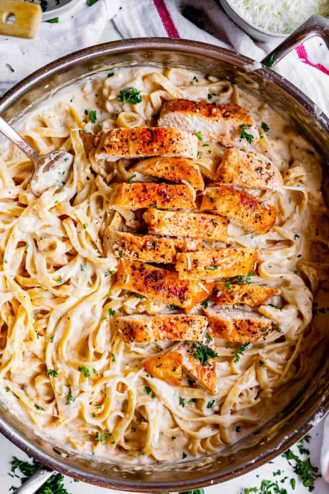

Chicken Alfredo

Description
If you have never had homemade Chicken Fettuccine Alfredo, you haven’t lived! Real, creamy, from-scratch Alfredo sauce is truly one of the most delicious things; store bought Alfredo pales in comparison. Pair your delicious creamy sauce with pasta and perfectly seared, juicy chicken for a decadent and easy dinner recipe, done in about 30 minutes!
Ingredients
- Chicken breasts
- Smoked paprika
- Butter
- Heavy Cream
- Fettuccine pasta/li>
- Pepper
- Permesan cheese
Steps
- Slice your chicken horizontally into cutlets. Pat them dry.
- Season the cutlets with salt, pepper, and paprika
- Sear the chicken in super hot oil and add a little butter for flavor.
- First we need to sear our chicken. Start by slicing your chicken in half horizontally into cutlets.
- Rub it with salt, pepper, and a bit of smoked paprika. You don’t have to add the paprika, but I love the subtle flavor it adds! It also adds nice color to the chicken
- Sear your chicken in super hot oil. Do not move it once it’s in the pan! This is how you get a nice brown sear.
- When you flip the chicken, add in a little butter. This adds flavor to the chicken and helps it brown. (If you cook the chicken in all butter instead of oil, the butter will get too brown and smokey.)
Remove the chicken and make the sauce in the same pan. Add in a whole lotta butter. This is not an apology. I mean, if you are on a diet, you probably just shouldn’t make chicken Alfredo.
- Add in 5 cloves of garlic. You can add less if you are a wimp. Just kidding. But do not underestimate the power of garlic! Don’t be afraid of it!